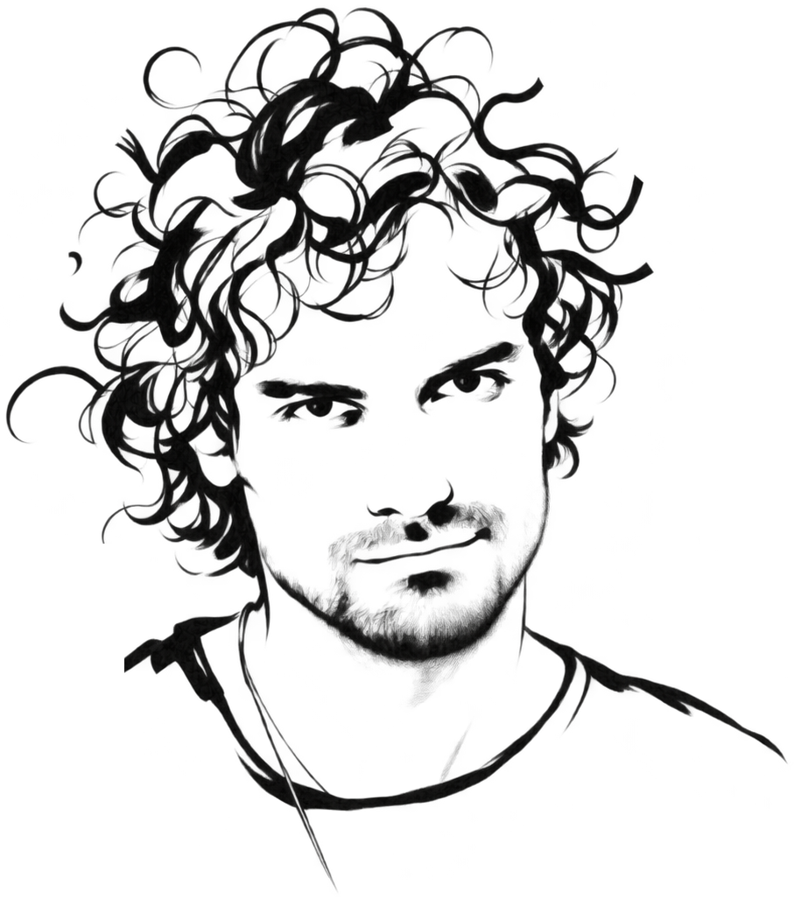

... клуб гардари ...
Встречи · Лекции · Общение
Анкета клуба
Чтобы делать встречи Клуба по-настоящему живыми и содержательными, нам важно лучше познакомиться с вами, вашими интересами и запросами. Анкета поможет нам понимать, какие идеи, темы и форматы общения для вас наиболее интересны.
Ответить на вопросы
Отправляя анкету, вы даёте согласие на обработку персональных данных в соответствии с Политикой конфиденциальности.
Шаг 1 из 10
- о себе
- интересы
- клуб
- согласие